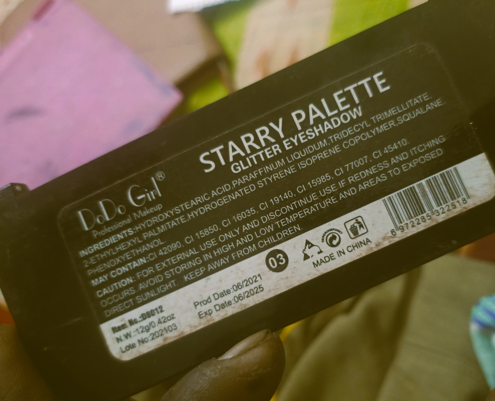
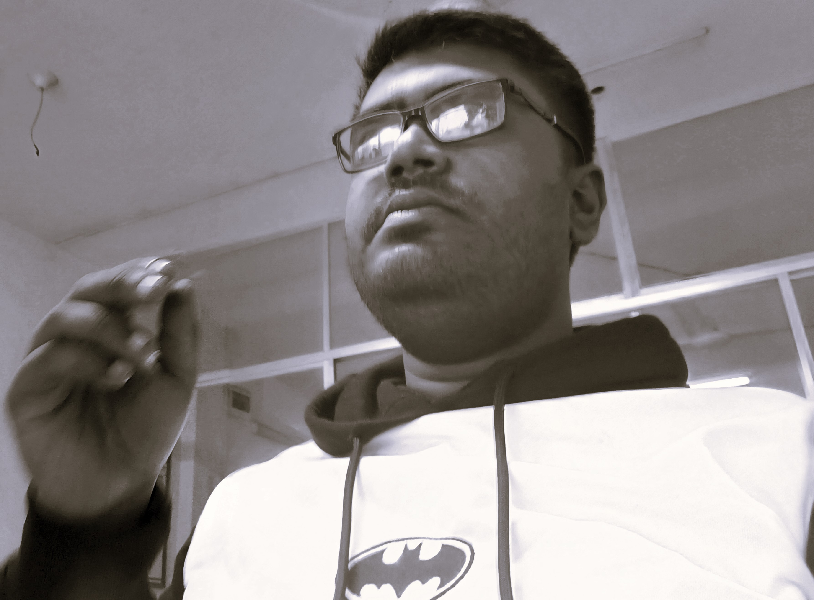
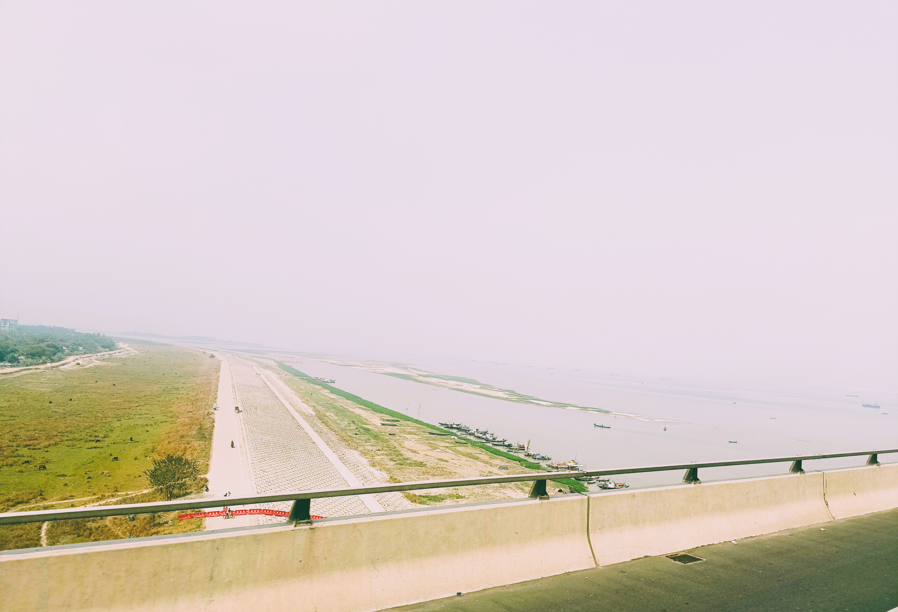
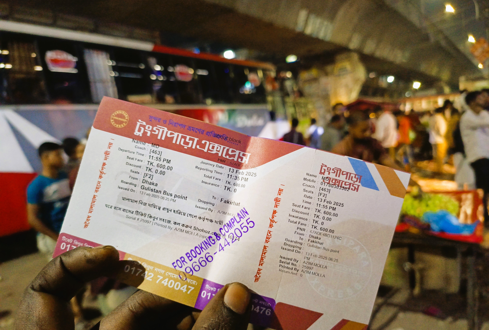
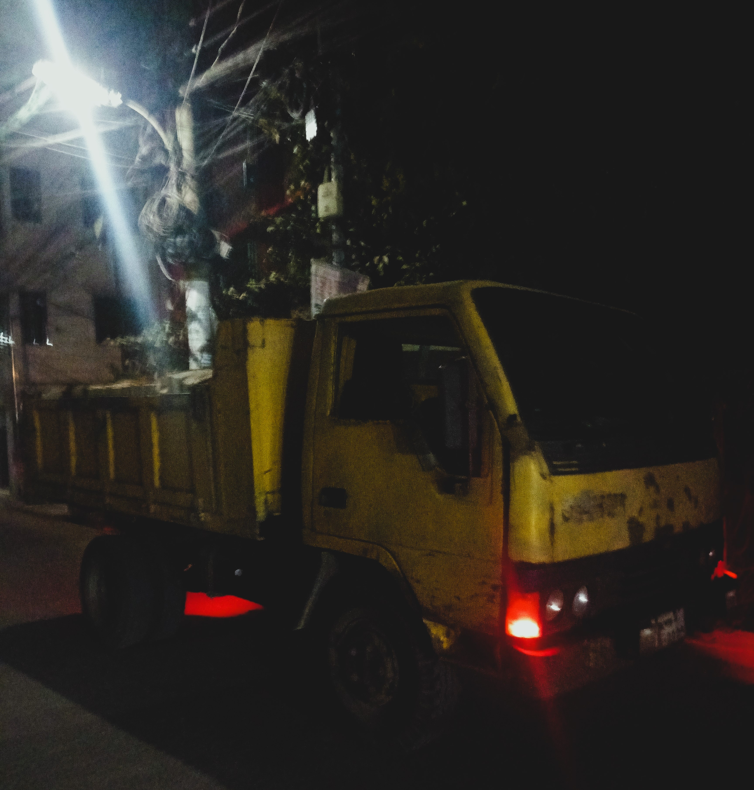

বর্তমান যেনো অতীতের উল্টো
বর্তমান জীবন যেনো এটা, গরম কালে ফ্যান ; শীতে কম্বল ; গ্রীষ্ম, বর্ষা, শীত প্রধান তিন ঋতু, দূরে যাতায়াতের জন্য বাস, বিশ্ববিদ্যালয়ে পড়াশোনা করা, পড়াশোনা শেষে অফিসে চাকরি। চাকরি করে টাকা ইনকাম। সেই টাকা দিয়ে বাজার থেকে জিনিসপত্র কেনা। জিনিসপত্রে exp বা মেয়াদ উত্তির্নের তারিখ আর উৎপন্নের তারিখ লেখা। আমার জীবন এর মধ্যেই। এটা ছাড়া অন্য কোনো জীবন আমার ধারনায় আসা কঠিন ছিলো। দূর থেকে অনেক শুনতাম, এটা মিথ্যা জীবন বা এটা কোনো জীবন না। কোনোভাবেই যেনো বিশ্বাস হতো না! মনে মনে আসতো, এরা তেমন কেউ না। ভালোভাবে বুঝতাম, তখনকার ওরা ওতো সৎ আর ভক্তিসম্পন্ন আর এরা চরম উল্টো মানে খারাপ ব্যবহারের!
যাইহোক, সেদিন কোথাও ছিলাম। কেউ যেনো অতীত থেকে বললো, 'তোমাকে একটা জিনিস দিবো'। এটা এসেছিলো মনে মনে। একটা ছোট মেয়ে আমাকে বললো, 'দেখোতো এর ডেট আছে নাকি?'  আমি দেখলাম ২০২৫ সালের আর ২ মাস পর শেষ হয়ে যাবে। ব্যবহারও হয়ে গিয়েছে অনেকটা। কোনোভাবে যেনো প্রোডাক্টের পিছনে থাকা প্রোডাক্ট ডিটেইলস নিয়ে কথা শুরু করেছিলাম, অতীতে ওদের সাথে। যেটা অনেকটা জীবন পরিবর্তন করে দিলো। সাধারণত বর্তমানে প্রোডাক্ট কিনতে হয় ওই কাগজ দেখে। কিকি রাসায়নিক পদার্থ রয়েছে, কোন কোম্পানি বানিয়েছে, কোন দেশের, মেয়াদ উত্তীর্ণের তারিখ ইত্যাদি। তো অতীত থেকে পেলাম:
(সবকিছুর মতো প্রোডাক্টিরও জীবন ছিলো; সেটা ২০২৫ সালে মারা যায় (যেটা তখনকার হিসাবে অনেক বড়। মানে হতে পারে এমন যে, শেষের অনেক শূন্যগুলোকে সহজে লিখতে একসাথে এক করে একটা শূন্য বানিয়ে এবং সুন্দর দেখাতে মাঝে লেখা হয়।) মানে বুঝলাম অনেক অনেক কাল। আর উৎপন্নের তারিখ নাকি ছিলো জন্মের তারিখ। ওখানে লেখা ক্যমিকেলগুলোর নাম হলো রোগের নাম। আমি পড়ছিলাম, ওরা মেলাচ্ছিলো। একই নাম! ওখানে রোগ আর এখানে ক্যমিকেল। এখানের ক্যমিকেলও ভয়ের। তবে এখানে ক্যামিকেল দিয়ে বিক্রিয়া ঘটিয়ে সহজে নানা প্রডাক্ট তৈরি হয় কথায় বিশ্বাসী। কোম্পানির নাম হলো ওদের হাসপাতালের নাম। বুঝলাম ওভাবে ওরা যখন মারা যেতো ওদের ভালোভাবে পরিষ্কার করে পিছনে কাগজ লাগিয়ে ওসব হাসপাতালে ভালোভাবে রাখা হতো। আর বর্তমানে দেশের নাম হলো তখনকার ওখান থেকে আনা।
ইদানিং কানে যেনো কেমন ইউনিভার্সিটি নিয়ে সোরগোল আসতো। তা বোঝার চেষ্টা করলাম ওটা কি! আস্তে আস্তে বুঝলাম, ওখানে বিশ্বের বড় বড় অপরাধীদের এনে রাখা হতো। তখনকার দিনে বড় অপরাধ মানেই অন্যের জ্ঞান চুরি করা।
(তখন মাথায় এসেছিলো, বর্তমানে এ সমাজে কেনো এরকম পাগল আর খারাপ ব্যবহার সম্পন্ন মানুষ দেখি!)
তারপর লেখার সময় ভাবছিলাম, অফিস কি! ওখান থেকে হলকাভাবে আসা ওয়েভে বুঝলাম, বর্তমানের অফিসে তখন অপরাধীদের শই করানো হতো।
অনেক কষ্টে টাকা'র ব্যাপারটাও বোঝার চেষ্টা করলাম। টাকা অনেকটা ছিলো অপরাধীদের রিসিটের মতো কিছু।
বুঝলাম, দুনিয়া যখন থেমে যাচ্ছিলো সবাই ঘরে ছিলো তখন এসব অপরাধীরা বেরিয়ে নতুন জগতের সূচনা করে। এটা ঘটেছে তাদের অন্তরে ধীরে ধীরে জমতে থাকা খারাপ কাজ করার তীব্র ইচ্ছা থেকে।
তারপর সকালে কোথাও গেলাম। যেতে গিয়ে কেউ যেনো মনে মনে বলছিলো একটা ব্রীজ খেয়াল করতে। আমি অনেক আগে সেখান দিয়ে গিয়েছি। অনেক বড় নদী ছিলো৷ ফেরিতে এবং লঞ্চে ২ ঘন্টার বেশি সময় নিতো পার হতে। এবার যেনো তেমনটা খেয়াল করলাম না। যেনো ব্রীজের মাঝে মাঝে সাধারন বাড়িঘর ও পরিবেশ৷ ভাবতেছিলাম কি হয়! আশাপাশের থেকে ওয়েভ আসছিলো কোটি কোটি জনতা যেনো আমার ব্রীজে ওঠার জন্য রেগে উল্টোপাল্টা বলছে। আসলে এ দুনিয়া ধ্বংসের অন্যতম একটা কারন, প্রাণগুলোর মধ্যে যেনো খুঁচে খুঁচে ভরা রয়েছে দুঃখ আর অন্যের কারনে পাওয়া এ দুঃখের হিংসায় অন্যদের অপমান করার প্রচেষ্টা!
তো, দুঃখের অনুভূতি সম্ভবত পানি তৈরি করতে পারে।  ওদের ওই দুঃখের অনুভূতিতে ওদের এলাকা পানিতে তলিয়ে যায় কিংবা ওদের এলাকার উপরে পানির আস্তরণ তৈরি করে। সত্যি পানি। মানে পদার্থের স্বাভাবিক আচরণ কিংবা ঠিকঠাক পানির কণা যেভাবে কোনো নিচু জায়গায় থাকে। এভাবেই যখন পানিতে ভরে যায় তখন ফেরি চলতে দেখা যায়। কিংবা আমরা সত্যি সত্যি ফেরিতে যানবাহন পারাপার করি ওখান থেকে। আবার পানি কমার সময় আমরা হয়তো ব্রীজ ব্যবহার করি। আর স্বাভাবিক হলেতো স্বাভাবিক পরিবেশ। শহর বা লোকালয় (এটা এখনও সত্যিকারভাবে দেখি নি)।
আবার পরদিন ওখানে গিয়ে রাতে দেখছিলাম, একটা বাস দাড়ানো। দুই মিনিটের জন্য চোখটা অন্যদিক নিয়ে পুনরায় আবার ওখানে তাকি দেখি, বাস নেই। পাশে একটা বসার জায়গা। উপরে ছাউনি। ছাউনিটা কেমন যেনো মনে হচ্ছিলো বাসের পিছনের অংশ। মনে হলো, বাসটা ওই হয়ে গিয়েছে। কিন্তু ভালোভাবে লক্ষ করে অনুভব, বাসের কণাগুলো যেনো অনেকটা ছাউনিতে রুপ নিয়েছিলে। কিন্তু ছাউনির কণা আবার আলাদা। বাসের কণাগুলো ছাউনির থেকে বেরিয়ে ভষ্ম হয়ে যাচ্ছে। ভাবলাম, এমন কেনো! ফেরি, ব্রীজ, বস বা ছাউনি সবই যেনো হতে চায়। তবে এক জায়গা? বুঝলাম, সবকিছু ছোট হয়ে এক জায়গা এসে মিলেছে। তাই একেক সময় একই স্থানে আলাদা আলাদা জিনিস হতে হয়। ওরা হয়তো কোনো কাজ করে ওদের থাকার সময়টা শেষ করে ভষ্ম হয় এবং অন্যটা আসে।
যে ব্রীজ পার হয়েছি, ওই নদীতে কিন্তু আগে নানা ধরনের লঞ্চও দেখেছি। ওগুলো দেখে ভালোভাবে অনুভব করার চেষ্টি করিনি লঞ্চ নাকি অন্যকিছু। তবে কেউ যেনো মনে মনে বলছিলো, 'শোলার মতো হালকা কি নাকি ভাসে!' আসলে ওই নদীও বাস্তবে সত্যিকারঅর্থে প্রাকৃতিকভাবে ছিলো। যেটা ওভাবে হতে দেখা যায়।
ফেরার সময় বাসে ছোট ফ্যান ঘুরছিলো। শব্দটা কেমন জানি। ধ্বংসের বাতাস ঘুল্লি এমন এক অনুভুতি। যা আগেও অনুভব করেছি। তবে এবার যেনো একটু পার্থক্য। ফ্যানগুলো যেনো সজাগ।  শক্তভাবে কিছু পরিমাপ করছে। ভালোভাবে দেখলাম, বাসে থাকা ৩/৪ টা ফ্যান কেমন যেনো বাতাসের আলোরণ করছে। পাশের সিটে একজন মোবাইল চাপছে। বুঝলাম, বর্তমানে মানুষগুলো কিছু না৷ বর্তমানের কোনোকিছুই যেনো কোনো জীবন বা স্বাভাবিক সমাজ বলা যাবে না। সবসময় দেখতাম, মানুষগুলো যেনো খারাপ ব্যবহার করে বা করতে চায়। আসলে, এখানে সবকিছু মানে জড় পদার্থগুলো যেনো খুঁজছে, কিসের জন্য জগৎ এভাবে ধ্বংস হয়েছে! এমন একটা অনুভূতি। তো, দুনিয়া যেনে আবার পাল্টে গেলো। আসলে ওদের খারাপ ব্যবহার হলো, অপ্রোয়জনীয় ওয়েভগুলো ওদের মধ্য দিয়েই ছেড়ে দিচ্ছে। একে অন্যের উপর রাগে, ওদের অন্তর যেনো আরো ভাঙছে আর পুরানো স্মৃতি বের হচ্ছে। তো, এভাবে পুরানো স্মৃতি বা দরকারি জিনিসগুলো দিয়ে আবার নতুন ভিডিও বানিয়ে ওদের দিয়েই দেখাচ্ছে। খেয়াল করে দেখলাম, পাশের ছেলেটি মোবাইলে ফুটবল খেলার রিল দেখছিলো। ওয়েভ থেকে বোঝার চেষ্টা করলাম, ওগুলো ওতো সুন্দর কেনো? মানে খেলার ভিডিও। বুঝলাম, ওরা ওরকম ভাবে কাউকে লাফি দিচ্ছিলো আর ভাবছিলো ফুটবল খেলছে। মানে আশেপাশে যা চলে সব ওদের করা পাপ ছোট ছোট করে দেখানো হচ্ছে। এর মধ্যে অন্যতম দেখি, মেয়েদের অপমান ও ছোট করার একটা ব্যাপার! যাইহোক, ফ্যানগুলো আজ একটু জীবন্ত মনে হচ্ছিলো। কিন্তু আগেতো কেমন যেনো মরা মরা লাগতো। বুঝতাম, তখনও একই ঘটনা ঘটতো। মরাসবও অটোমেটিক করতো। মানে এমনি এমনিই হচ্ছে! ফ্যানগুলোর দিকে তাকিয়ে আরো অনুভব করলাম, কি জানি একটা একটা ছোট কণা আলাদা আলাদা করে নিয়ে উপরে সুন্দরভাবে সাজাচ্ছে!
এগুলো যেনো হটাৎ করে সেট করা লাগে নি যে দুনিয়ার খারাপ অবস্থা বিধায়! আগেও ছিলো হয়তো অপরাধীদের ধরে রাখা স্থানে। আর বাসে হয়তো একসাথে অনেক অপরাধী আনা হতো!
ভাবছিলাম, তাহলে তখনকার গরম কালে এরকম জিনিস মানে ফ্যান ঘরে ঘরে চলতো? বুঝলাম, গরমও একটা অনুভূতি আনে। আরো অনুভূতিতে ভরা প্রাণ না পাওয়া অনুভূতি পেতে চায়। এভাবে গরামকালও একটা সুন্দর অনূভূতি আনতো। সারাক্ষণ ফ্যান লাগতো না। তবে এখন কেনো লাগে? কারন, বর্তমানে ওদের মধ্যে একটা জীনিস চরমরুপে দেখা যায়। সেটা হলো নিজেকে বড় করা ও অন্যকে অপমান করা। ওদের ওর মধ্যে রাখা হতো বিধায় 'ওই ভালো ওই ভালো' করতে করতে গরমকালে ২ মিনিটের জন্য ফ্যান না চললেও হয়তো বিরক্ত লাগে!
এটা বোঝার পর আরো ভাবছিলাম, আরো কিছু ভয়ঙ্কর হতে পারে!? যেনো মনে মনে কেউ যেনো বলছিলো, "এও কিছু না। আরো ভয়ঙ্কর ; তুমি জানো না!"
কিন্তু এই জীবনে আমি চলতাম। এটা নরক? শুধুই অপরাধীদের জন্য? আর কোনো জায়গাতো দেখা যায় না। তবে ভালোদের জায়গা কোথায়!?
আসলে অপরাধীদের জন্য এতো বড় পরিবর্তন হতে পারে না৷ এটা ভয়ঙ্কর পরিবেশ ঠিক। কিন্তু এর মধ্যেই ভালোদের থেকে কাজ করতে হবে। ঠিক এভাবেই কাজ করার পাশাপাশি এ জায়গাটাও ভালোদের নিয়ে ভালোভাবে চালাতে হবে। বর্তমানে ধ্বংসের জীবনে এটাই জীবন।
- Moloy Ghosh 2/14/2025
